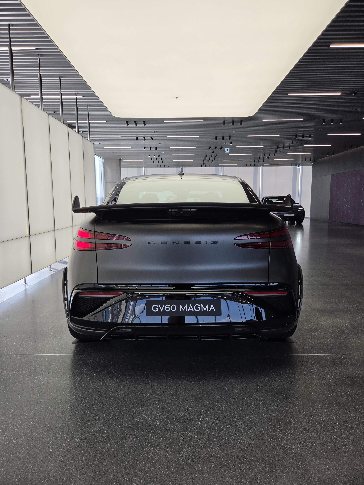
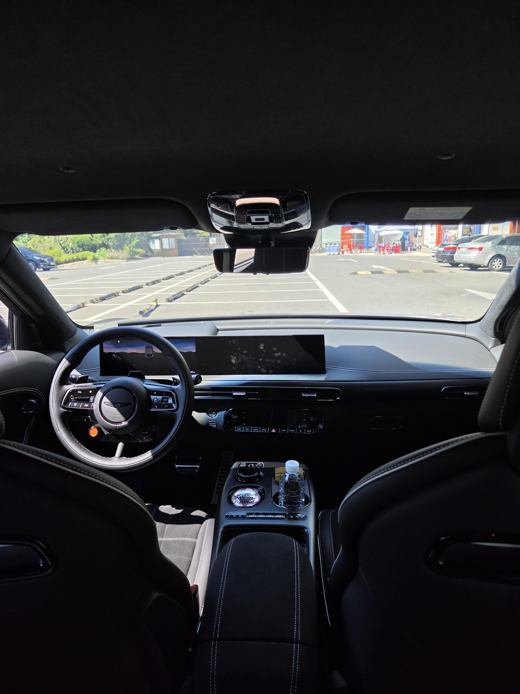
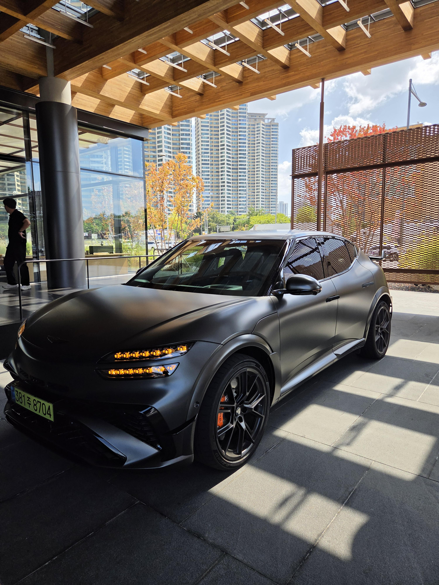
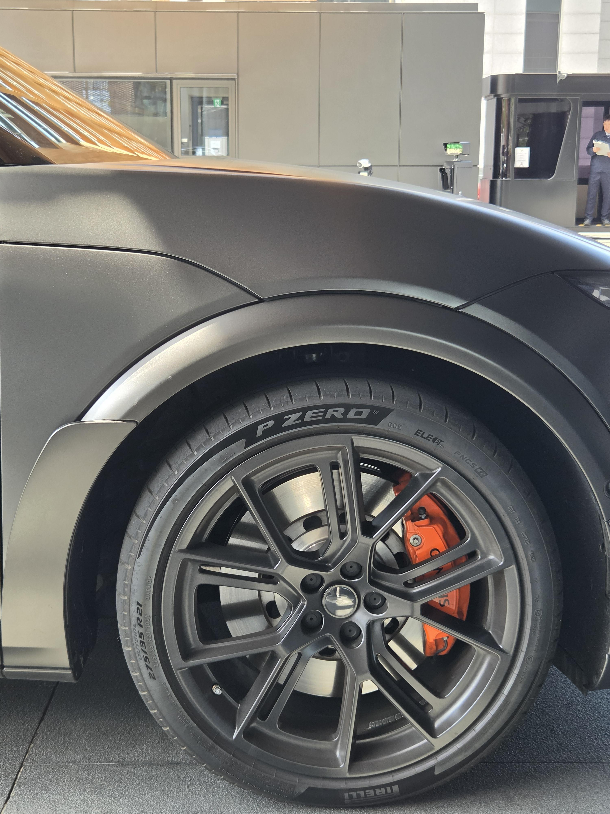
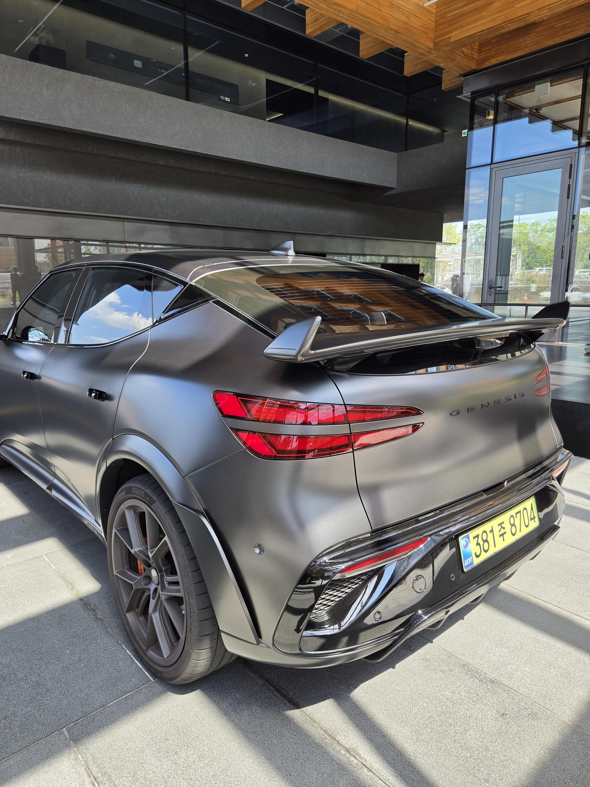
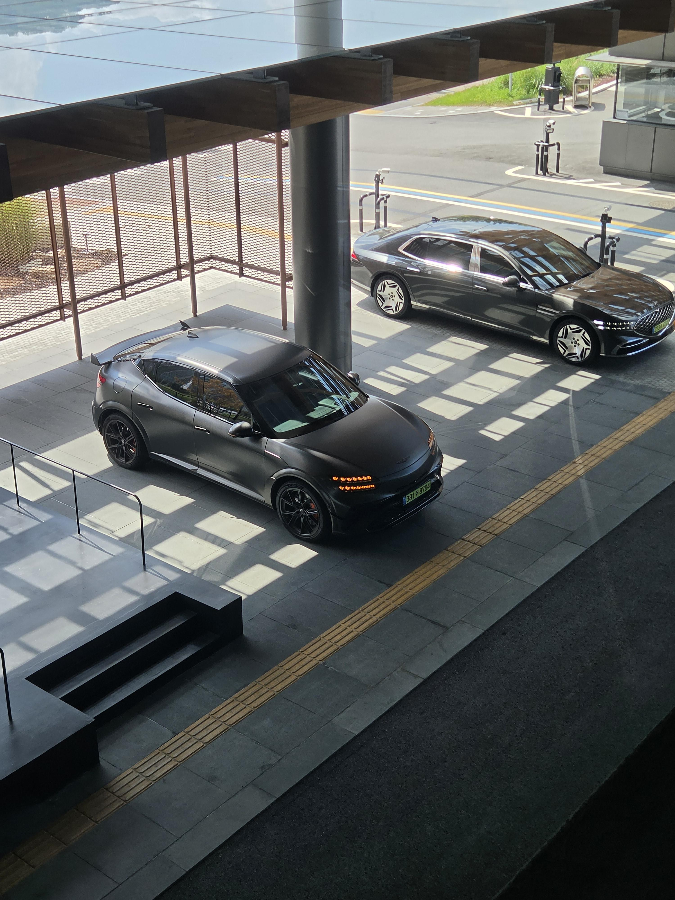

이건 단순히 제로백 , 코너링 , 고속안정성 , 승차감 등으로 논할만한 차가 아님
전기차 시대에서 그런차들 중국에서도 쌔고쌨다
안경잽이새끼들마냥 수치 줄줄읇으면서 제로백이어쩌구 마력이어쩌구 하는것들 말야
마그마는 얼마나 재미있고 , 펀드라이빙의 감성을 살리느냐, 이걸 핵심으로 만든 차인거같더라고
마그마 모드 돌리는 순간 전자레인지라고 놀림받던 돼지새끼가
걍 내연기관으로 바뀜
가상배기음이랍시고 1도 이질감도없을뿐더러
패들시프트로 다운시프트 치자마자 존나빠르게 변속되면서 (변속기없음)
변속충격오는데 " 개시팔 이게 뭔 ......이게 .... 이씨팔 이게 진짜뭐지? "
ZF8단 몰래 달아놓은게 틀림없다 싶어
시승도중에 공임나라가서 리프트 띄워봤다 시발거
근데 더 사기적인게 뭔줄알아?
제로백 3초대 , 관리 필요없는 슈퍼카급 성능의 차량을
메인터넌스 부담없이 단돈 한달 집밥 8만원따리로 탈 수 있는거임;;
풀악셀치면서 퓨얼컷 갈기고 , 다운시프트 존나게쳐도
"응 ㅋ 어차피 차에 무리 1도 안가 ㅋ 니맘대로 조져봐 니가 아무리 쥐어짜봤자
겨우 모터 살짝 멈췄다 다시 돌리는거임 ㅋㅋㅋ" 라고 차가 나에게 말하더라...
심지어 고급유도 필요없어;;;;; 600마력짜리 차가 굴러가는데;;;;;;;;;;;;;;
이게 바로 기본소득이자 무상복지 아니냐고;;;;
[정관수술한 불알마냥 책임없는 쾌락을 즐기는것]
이게 마그마가 우리에게 제시하는 펀 드라이빙의 새로운 패러다임 아닐까?
난 이 미친 차에 완전히 빠져버렸다.
전기차의 휠마력은 모르냐? ㅋㅋㅋㅋㅋㅋㅋㅋㅋㅋㅋ 제발 아는척하지마